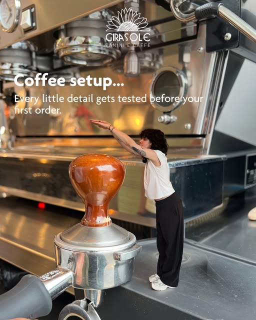
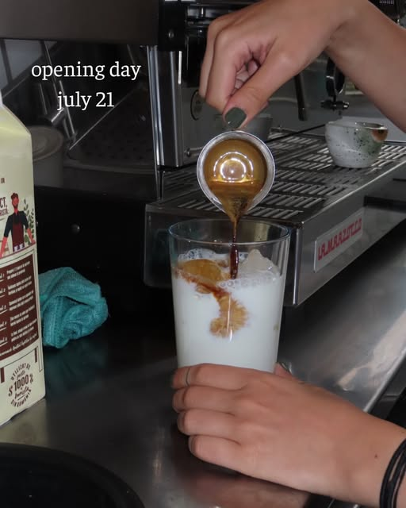
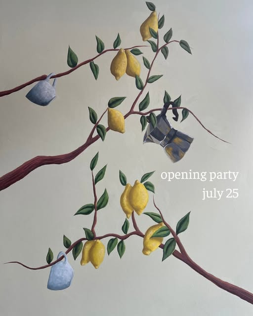

Panini e Caffè
Un colț liniștit pentru detalii bine făcute.
La Girasole pregătim panini cu pâine crocantă și cafea testată până la ultimul detaliu — un spațiu luminos pe Strada Austrului nr. 1, în București.



Contact
Ne găsești pe Austrului
Girasole Panini e CaffèStrada Austrului nr. 1
București
- Program
- Luni–Duminică · 09:00–18:00
- @girasole.bucuresti
Programul poate varia — verifică highlight-ul „program” pe Instagram.